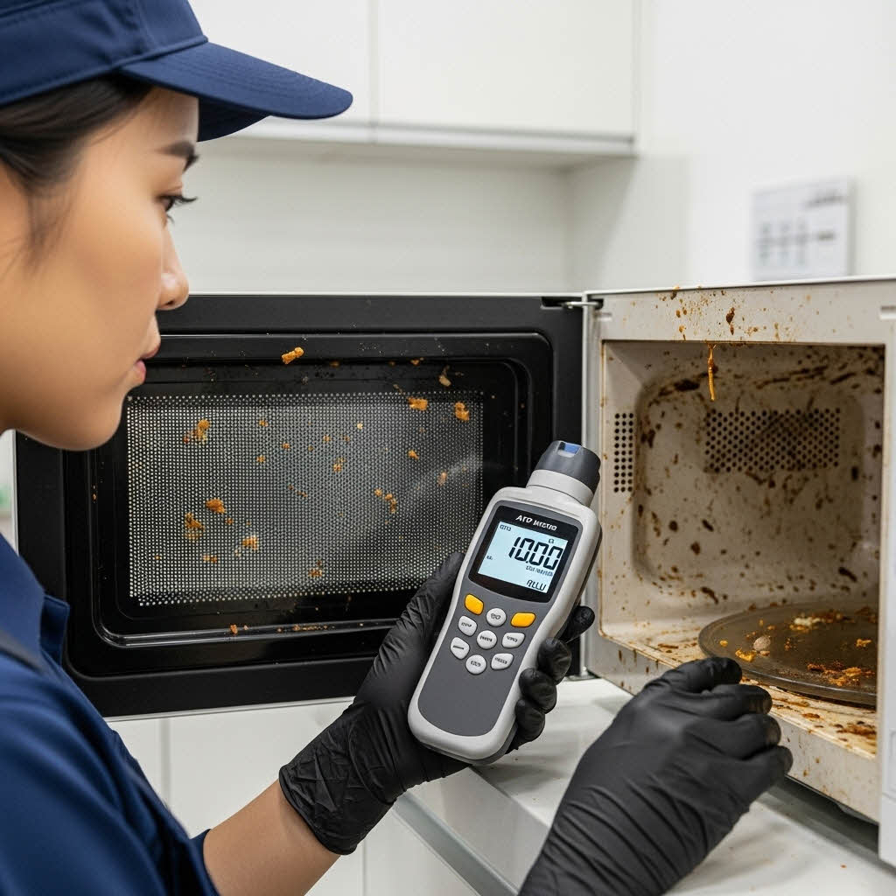
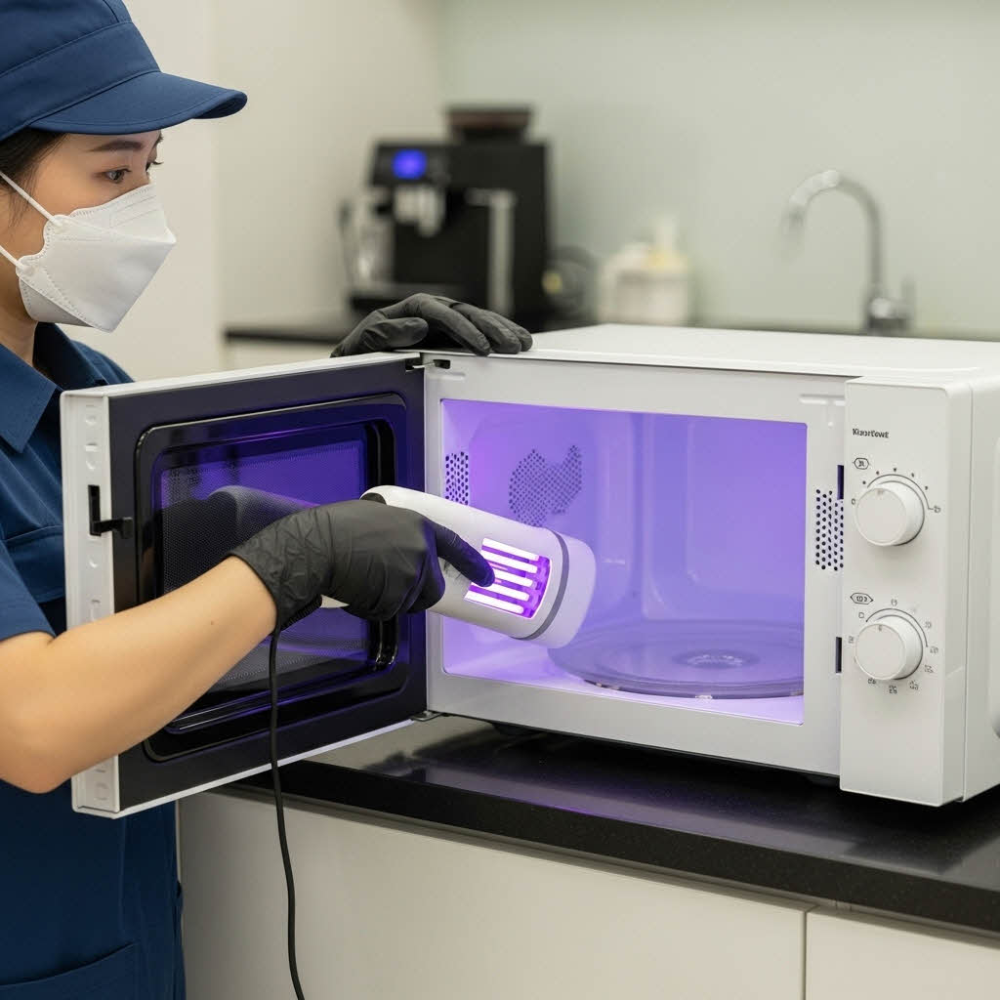
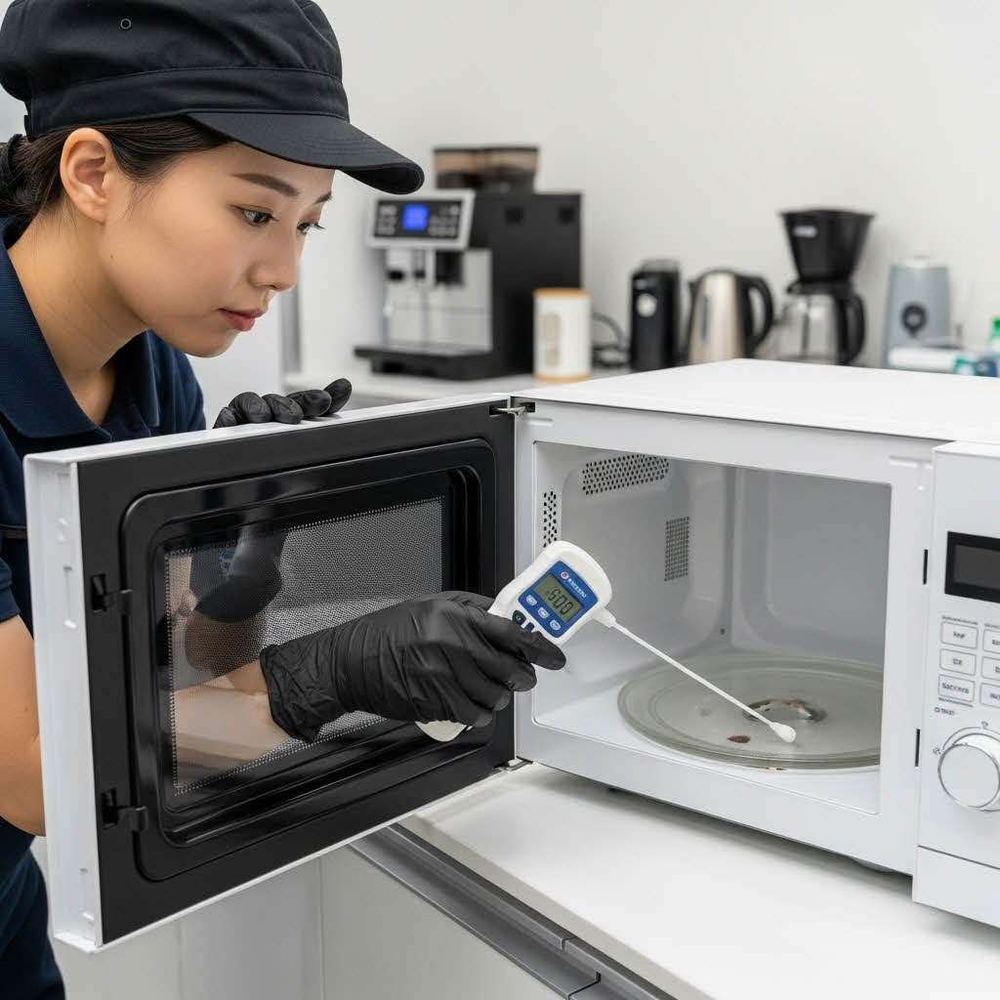

전자렌지는 '음식물 조리'라는 오해 때문에 청결하다고 생각하기 쉽지만, 공용 전자렌지는 다수가 접촉하며 고온다습한 내부 환경은 세균이 빠르게 증식하는 위험 구역입니다. 아래 체크리스트는 관리 시급성을 파악하는 데 중요합니다.
전자렌지 위생 관리 순서
| 항목 | 확인 사항 (내용) | 이행 |
|---|---|---|
| 청소 전 촬영 | 상세 위치 스티커 및 내부 촬영 | |
| 청소 (내부) | 이물질 제거, 스팀청소, 회전판 분리 세척 | |
| 청소 (외부) | 외부 및 틈새 스팀 청소 진행 | |
| 소독 | 자외선 살균 소독 확인 | |
| 청소 후 촬영 | 작업 완료 사진 촬영 | |
| 마무리 | 작동 확인 및 주변 정리 | |
| 특이사항 | 작동 불량 등 발생 시 전면 부착 |
전자렌지 위생 체크리스트
기업 내 공용 전자렌지는 하루에 수십~수백 번 사용되며, 위생 리스크가 매우 높습니다.
문 손잡이 및 버튼부 등 고빈도 접촉면의 오염도를 ATP 측정기로 객관적인 수치(RLU)로 진단합니다. 내시경 장비로 내부 마이카 플레이트 주변, 문 경첩 틈 등 육안으로 확인 어려운 틈새의 잔여 오염물 및 손상 여부를 확인합니다.
ATP 측정 및 내시경 진단
회전판, 회전링, 마이카 플레이트(일부 모델), 도어 패킹 등 탈부착 가능한 모든 부속품을 분리합니다. 내부 벽면, 천장, 도어 프레임 주변의 음식물 찌든때 및 탄화 오염 레벨을 기록하여 집중 관리 구역을 파악합니다.

부품 분해 및 오염 레벨 기록
식품 안전 인증을 받은 전용 세척제를 분사하여 내부 벽면에 찌든 음식물 잔여물을 연화시키고, 고온 스팀기와 전문 스크래퍼를 사용하여 내부 천장, 벽면의 딱딱하게 굳은 오염물과 유증기를 완벽하게 제거합니다.

고온 스팀 및 전용 약품 세척
UV-C 자외선 살균기를 이용하여 세척 후 남아있을 수 있는 내부 잔류 세균, 곰팡이 포자 등을 강력하게 살균합니다. 내부 악취를 유발하는 유기물을 분해하여 냄새 재발을 방지하고 내부 공기질을 개선합니다.
살균 및 냄새 제거
작업 완료 후 문 손잡이, 버튼부 등 고빈도 접촉면의 ATP 수치를 재측정하여 개선 전/후 수치를 비교합니다. 작업 전/후 사진, ATP 데이터, 위생 권장 기준치 준수 여부 등이 포함된 종합 보고서를 제공합니다.
ATP 재측정 및 보고서 제공
전자렌지는 사용 빈도에 비례하여 위생 리스크가 증가합니다.
정기적인 전문 관리 후 기업은 단순한 청결 유지를 넘어, 다음과 같은 실질적인 개선 효과를 얻을 수 있습니다.
전자렌지는 간편한 조리 도구이지만, 관리가 소홀할 경우 화재 위험과 세균 번식의 온상이 됩니다. 클린메이트의 전문 분해·살균 관리를 통해 보이지 않는 틈새의 오염까지 완벽히 제거하여 안전하고 쾌적한 탕비실 환경을 조성하십시오.